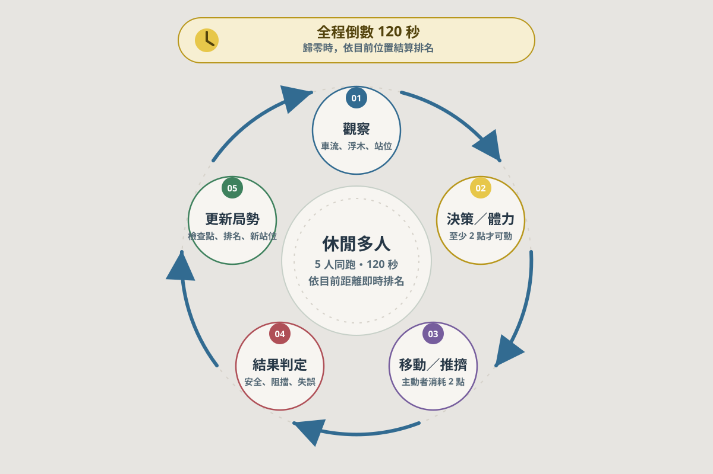

01｜隊列卡住
你BOTBOT路
前進受阻時，玩家先判斷停等、繞路，或主動施力。
Internal Greenlight Presentation / 2026
現有玩法與樂趣人人看得懂；每一步都能改變局勢的多人競技。
01 / 09
Agenda
用已驗證的 Prototype，聚焦討論可被玩家測量的遊戲價值。
02 / 09
Core Opportunity
目標模式／待驗證・尚未實裝不必等待湊滿一局；直接進入進行中的房間。
可在目前領先者前或後生成；進場位置需安全可用。
新玩家以 0 分開始；倒數保護後，GO 才開始計時／計分。
位置不等於分數或名次；以自己的操作與累積得分完成挑戰。
降低等待，不犧牲個人競技的公平起點。
03 / 09
Core Fun
已驗證 Prototype危險與對手位置持續變化，等待、繞路、前進與干擾都不是自動答案。

04 / 09
Differentiated Interaction
已驗證 Prototype推擠把「前方有人」從單純卡位，轉化為一個可讀、可利用、也有代價的判斷。
前進受阻時，玩家先判斷停等、繞路，或主動施力。
正確推擠可讓隊列恢復流動，創造通過窗口。
推人也可能把對手送進車流、鐵道或河道風險。
不是單純跑得快；而是讀懂局勢、選擇何時改變局勢。
05 / 09
Replayable Tension
已驗證 Prototype先預警、再成洞、最後修復；危險可讀，且任何時刻保留可行路。
休閒 Prototype以可見的繞路選擇，讓玩家衡量立即前進與額外得分。
Prototype鎖定目前位置最前的其他角色，預警後暈眩；配合控制免疫與戰鬥公告。
Prototype公平護欄：危險必須可讀、可回應，且不能封死路徑。
06 / 09
Commercial Hypotheses
假設・待玩家驗證若能隨時加入，可能減少等待與空房挫折，提升開始遊玩的機會。
若玩家持續進出，同局的社交、對抗與觀戰張力可能更高。
若個人計分形成反覆挑戰，可能支援外觀內容與後續模式的擴充。
本頁不主張既有營收、留存或市場成果；它們都是下一階段必須量測的假設。
07 / 09
Greenlight Scorecard
決策框架・待玩家測試| 評估構面 | 權重 |
|---|---|
| 核心樂趣 | 30 分 |
| 差異化互動 | 20 分 |
| 首次理解 | 15 分 |
| 商業假設可驗證性 | 20 分 |
| 原型可行性 | 15 分 |
75 分以上：進入玩家測試
60–74 分：補強弱項後重評
未滿 60 分：不建議擴大投入
08 / 09
Q & A
Decision Discussion從人人看得懂的第一步，走向持續改變局勢的多人競技。
09 / 09